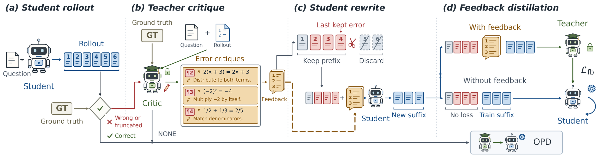
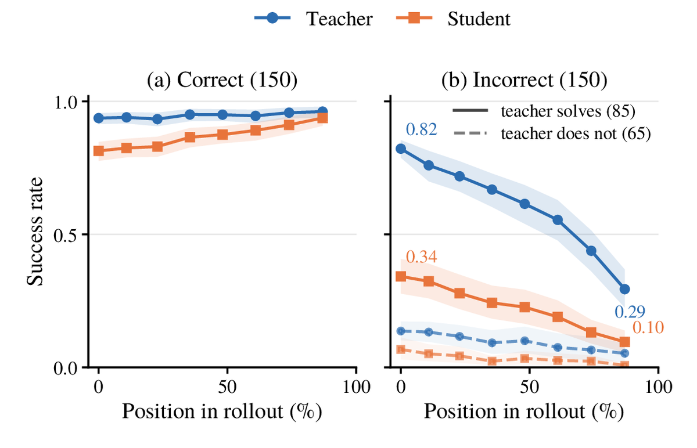
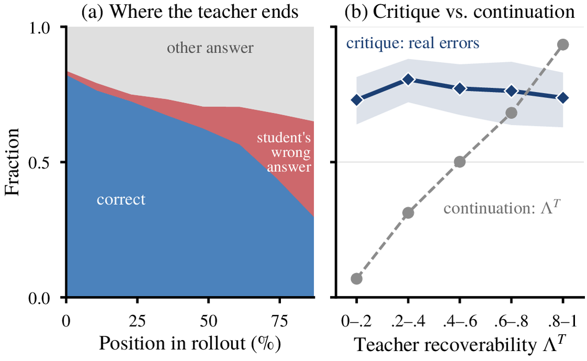
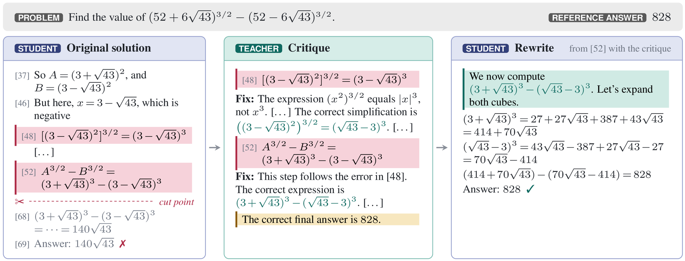
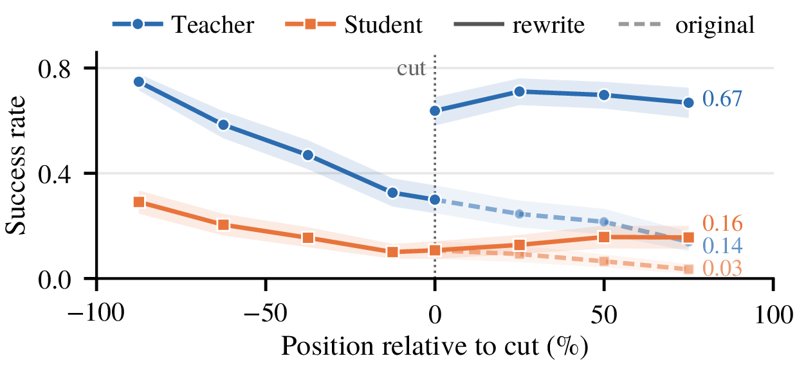
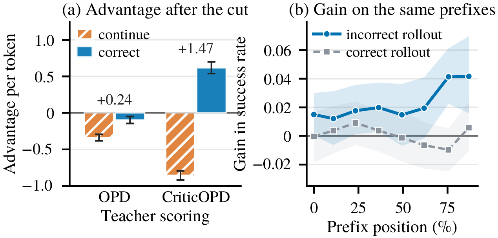

On-policy distillation · teacher critique · privileged information
Recovering Reliable Supervision via
Critique-Guided On-Policy Distillation
The teacher follows the student's errors, but still recognizes them
Contact · kzhao2@byu.edu · tkillian@cs.byu.edu
ADEPT Lab·Brigham Young UniversityThe central idea
After the student errs, the teacher still recognizes the error. CriticOPD turns that recognition into supervision.
On-policy distillation (OPD) trains a student on its own rollouts, with the teacher's next-token distribution as the target at every prefix. This target is only useful if the teacher can still reach a correct answer from the student's prefix. On incorrect rollouts it often cannot: it follows the student's errors. CriticOPD asks the teacher to critique the rollout instead, lets the student rewrite from the last error, and lets the teacher score the rewrite with the critique in its context.
- 01Where it fails. Along incorrect rollouts of problems that it solves readily, the teacher's accuracy from the student's prefix falls from 0.82 to 0.29, and up to half of its failed continuations end with the student's wrong answer.
- 02What survives. Asked to critique the same prefixes, the teacher still recognizes the errors: 73% to 81% of the errors that it flags are real, at every level of recoverability.
- 03How CriticOPD uses it. Every supervised token is written by the student, and the critique is privileged information: the student needs no feedback at inference.

01 / Where the supervision fails
On incorrect rollouts, the teacher follows the error.
We measure the reliability of the teacher by its recoverability $\Lambda^T(h_t)$: its accuracy when it continues from a prefix $h_t$ of the student. A student that imitates the teacher perfectly from $h_t$ onward reaches exactly this accuracy, so a low $\Lambda^T$ means that the OPD target is an unreliable corrective signal.
We cut 300 rollouts of a Qwen3-1.7B student at eight positions and let the Qwen3-4B-Instruct-2507 teacher continue 16 times from each cut. On correct rollouts the teacher stays at or above 0.93. On incorrect rollouts it declines sharply, even on problems that it solves readily from scratch.


02 / Method
Critique, cut, rewrite, and score with the critique.
CriticOPD builds training sequences that the student writes from the states that it reaches at inference, and on which the supervision of the teacher is reliable.
- 1
Critique
An incorrect or truncated rollout goes to the teacher with the reference answer. The teacher lists each error with its paragraph, the erroneous sentence, and a short fix, and the critique ends with the reference answer.
- 2
Cut
The student keeps its prefix through the paragraph of the last listed error and discards the rest, so the rewrite starts where recoverability has declined.
- 3
Rewrite
The student continues from the cut point with the critique in its context. It writes every token of the new suffix.
- 4
Score
The teacher scores the suffix with the critique in its context, and the student learns from the same sequence without the critique.
Where does the supervision fall after the student errs?
Pick a method to see who writes each token of the training sequence and which tokens receive a loss.

Feedback distillation
Only the rewritten suffix, from the cut point $\tau$ on, receives supervision. The teacher sees the critique $c$; the student does not.
Correct rollouts, and rollouts whose critique lists no complete error, are trained with standard OPD. CriticOPD minimizes $\mathcal{L}_{\mathrm{OPD}} + \mathcal{L}_{\mathrm{fb}}$.
On the rewrite, the teacher is reliable again
At 75% of the continuation after the cut point, the recoverability of the teacher is 0.14 on the original rollout and 0.67 on the rewrite with the critique. The success rate of the student without the critique rises from 0.03 to 0.16.

03 / Results
+4.57 points over OPD, with the largest gains on competition problems.
Qwen3-1.7B student in non-thinking mode, distilled from Qwen3-4B-Instruct-2507 on DAPO-Math-17k. Accuracy (%) with a budget of 32,768 tokens, averaged over 32 samples per problem on AIME and AMC and over 8 samples on the others; mean ± standard deviation over three seeds. The paper adds a Qwen3-0.6B student, OLMo-3 models, and the remaining baselines.
| Method | Step | AIME24 | AIME25 | AMC23 | MATH500 | Olympiad | Minerva | Avg |
|---|---|---|---|---|---|---|---|---|
| OPD | 80 | 35.10 ± 0.42 | 22.78 ± 0.42 | 62.94 ± 0.40 | 86.26 ± 0.42 | 56.65 ± 0.36 | 36.78 ± 0.53 | 50.08 ± 0.09 |
| OPSD-T | 60 | 37.08 ± 0.73 | 23.51 ± 0.51 | 63.64 ± 0.30 | 86.85 ± 0.33 | 57.47 ± 0.19 | 37.53 ± 0.79 | 51.01 ± 0.39 |
| FastOPD | 60 | 40.97 ± 1.84 | 26.25 ± 0.58 | 66.08 ± 0.24 | 87.28 ± 0.36 | 58.01 ± 0.27 | 36.73 ± 0.99 | 52.55 ± 0.36 |
| RelayOPD | 40 | 40.10 ± 1.15 | 29.97 ± 0.60 | 67.32 ± 0.52 | 88.10 ± 0.35 | 59.07 ± 0.25 | 37.50 ± 0.12 | 53.68 ± 0.39 |
| CriticOPD | 40 | 41.11 ± 1.02 | 30.14 ± 1.00 | 69.88 ± 0.26 | 88.87 ± 0.50 | 60.45 ± 0.51 | 37.44 ± 0.19 | 54.65 ± 0.10 |
| Δ vs OPD | +6.01 | +7.36 | +6.94 | +2.61 | +3.80 | +0.66 | +4.57 |
CriticOPD reaches its selected step after 40 steps and uses 17.2 A100 GPU-hours, 0.42 times the training compute of OPD at step 80.
Where the gains come from
The advantage of CriticOPD splits exactly into the OPD advantage on the same sequence and a reward $r_t$ for each token:
$r_t$ is the pointwise mutual information between the token and the critique under the teacher. At 132 cut points, a continuation that corrects the error leads one that continues it by only 0.24 per token under the scoring of OPD, and by 1.47 under the scoring of CriticOPD.
The trained student recovers from its own errors more often. On OlympiadBench, which is not part of the training data, the student of CriticOPD continues correctly from incorrect prefixes more often than the student of OPD, by about 0.04 at the last two cut points, while the two students are even on correct prefixes.

Resources
Read the paper, run the code.
Train and evaluate
# copy CriticOPD onto Relay-OPD at the pinned commit
git clone https://github.com/kzhao5/CriticOPD.git
cd CriticOPD && bash setup.sh
cd Relay-OPD/relay-opd
python ../../data/prepare_dapo.py
# models and data: see the README
SEED=42 OUTPUT_DIR=$PWD/runs/criticopd_seed42 \
bash opd/scripts/criticopd/train.sh
# evaluate the checkpoint at step 40
CKPT=runs/criticopd_seed42/global_step_40
MODEL=$CKPT/actor/huggingface STEP=40 \
RUN_NAME=criticopd_seed42 DATA_DIR=$BENCH \
OUT_ROOT=$PWD/eval bash opd/scripts/criticopd/eval.shSwitches
CRITIC_OPD_ENABLE=1 # 0: plain OPD
CRITIC_OPD_GIVE_GT=1 # critic sees the answer
CRITIC_OPD_KERR=last # cut after the last error
CRITIC_OPD_CRITIC_TOKENS=2048 # critique length limit
CRITIC_OPD_FB_ANSWER=1 # feedback ends with the answer
CRITIC_OPD_LOSS=fb # teacher scores with feedback
CRITIC_OPD_REWRITER=student # who writes the suffixCitation
@article{zhao2026recovering,
title = {Recovering Reliable Supervision via Critique-Guided On-Policy Distillation},
author = {Zhao, Kaixiang and Yu, Tianrun and Li, Shangzhe and Yang, Yuxiao and Hughes, Amanda and Zhang, Weitong and Killian, Taylor W.},
journal = {arXiv preprint arXiv:2610.20572},
year = {2026}
}